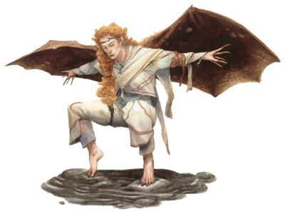

很多人都知道，有些龙类能够幻化人形，甚至与凡人相恋。有时候，这种结合会产下后代，龙的血液就这样代代相传。强大的术士通常会宣称自己有着龙类的祖先，但其实这很少是事实。而对于那些身体里真正流着龙族血液的角色而言，祖先的感召无可抗拒。这些角色最终成为了龙脉术士，他们运用魔法的力量点燃自己的生命，发掘着龙族血脉那无尽的潜力。
比起在修道院中隐居避世，龙脉术士更喜欢不断探索的人生。他们中的很多人都是偶尔显示出术士或吟游诗人天赋的野蛮人，战士以及巡林客。当然，真正的施法者也偶尔会踏上这条道路，追寻自己的祖先，代价则是放弃自己在奥术方面的研习。牧师和督依德教徒则绝少能够成为龙脉术士。龙脉术士能耍上几个法术，对冒险也算是相当热衷，尤其是在有可能找到关于自己祖先踪迹的时候。所有的龙脉术士都会不由自主地向着只有龙类才知道的隐居地靠近。

生命骰：d12
进阶要求：
想要成为一名龙脉术士，角色必须满足下述条件：
种族：任意非龙类生物（半龙生物同样无法进阶龙脉术士）
技能：知识（神秘）8级
语言：龙语
法术：必须能够不经事先准备施展奥术
特殊：在进阶前，角色必须选择一种龙类特征，并征得城主的同意
本职技能（以及技能的关键属性）：专注（体质），手艺（智力），交涉（魅力），逃脱（敏捷），收集情报（魅力），知识（全部，按照分类选择）（智力），聆听（感知），专业（感知），搜索（智力），语言（无），法术辨识（智力）以及侦察（感知）。技能的详细说明，请参见玩家手册第四章。
每等级技能点数：2+智力调整值
表6-7 龙脉术士
等级 基本攻击加值 坚韧豁免 反射豁免 意志豁免 特殊 额外法术
1 +0 +2 +0 +2 天然防护等级+1 1
2 +1 +3 +0 +3 属性增强（力量+2），利爪及啮咬 1
3 +2 +3 +1 +3 喷吐攻击（2d8） 0
4 +3 +4 +1 +4 属性增强（力量+2），天然防护等级+2 1
5 +3 +4 +1 +4 30尺盲视 1
6 +4 +5 +2 +5 属性增强（体质+2） 1
7 +5 +5 +2 +5 喷涂攻击（4d8），天然防护等级+3 0
8 +6 +6 +2 +6 属性增强（智力+2） 1
9 +6 +6 +3 +6 龙翼 1
10 +7 +7 +3 +7 60尺盲视，龙化 0
职业特性：
擅长武器及防具：龙脉术士不擅长任何武器或防具。
额外法术：龙脉术士升级时，可以按表6-7获得额外法术。本能力与高属性值带来的额外法术相同，但可以被附加在龙脉术士所能施展的任意等级上。若角色在进阶前拥有多个施法职业，则必须选择要将额外法术附加到哪种职业的法术栏位上。额外法术的等级一旦确定，则无法变更。
天然防护等级（EX）：当龙脉术士达到1级，4级和7级时，角色的外观相貌逐渐向龙类靠近。角色的皮肤上生长出光彩夺目的鳞片，并且随着等级的提高渐渐由小变大。因此，角色获得天然防护等级奖励，数值如表6-7所示。
利爪和啮咬（EX）：当龙脉术士达到2级时，可以获得利爪和啮咬攻击，数值由下表所示。若龙脉术士在进阶前已经拥有了利爪和啮咬攻击，则伤害值取其高者。龙脉术士视为擅长使用本类武器。当角色进行全回合攻击时，使用最高攻击加值进行啮咬攻击，在使用利爪攻击时则在攻击加值上承受-5的惩罚。若角色拥有多重攻击（见怪物图鉴第304页）这项专长，则惩罚降低为-2。
体形 啮咬伤害 利爪伤害
小型 1d4 1d3
中型 1d6 1d4
大型 1d8 1d6
属性增强（EX）：龙脉术士升级时，可以按照表6-7增强属性，并可以与升级时得到的属性点叠加。
喷吐攻击（SU）：当龙脉术士达到3级时，龙族血脉可以使角色发动次级喷吐攻击，喷吐攻击的类型和形状则取决于龙类祖先的种类（见下表）。但无论龙类祖先的种类，喷吐攻击都可以造成2d8点相应属性的能量伤害。当龙脉术士达到7级时，喷吐攻击的伤害提升至4d8点，而当龙脉术士达到10级时，喷吐攻击可以发挥出全部威力，造成6d8点伤害。龙脉术士每日可以使用1次喷吐攻击。除特殊说明，喷吐武器的规则和龙类喷吐武器相同（见怪物图鉴69页）。喷吐武器的豁免DC等于10+角色职业等级+角色的体质调整值。线型喷吐攻击高度5尺，宽度5尺，距离60尺；锥形喷吐攻击距离30尺。
龙族祖先* 喷吐武器
黑龙 线型酸液
蓝龙 线形闪电
绿龙 锥形腐蚀气（酸液）
红龙 锥形火焰
白龙 锥形寒冷
黄铜龙 线形火焰
青铜龙 线形闪电
红铜龙 线形酸液
金龙 锥形火焰
银龙 锥形寒冷
*其他龙类祖先的龙脉术士同样存在。
盲视（EX）：当龙脉术士达到5级时，角色获得30尺盲视能力。通过非视力感观，诸如嗅觉和听觉，龙脉术士可以感觉到自己无法看到的目标。角色不需要进行侦察或是聆听检定就可以得知目标的位置，但角色无法看到的目标仍视为全遮蔽，角色攻击处于遮蔽状态的目标时，仍有失手几率。而且，即使拥有盲视能力，无法视物仍然会影响角色的行动，同时角色被无法看到的生物攻击时，防护等级上仍然会丧失敏捷加值。当龙脉术士达到10级时，盲视范围扩大到60尺。
龙翼（EX）：当龙脉术士达到9级时，角色的背脊生长出龙翼，获得与陆行速度相同的飞行速度，灵活性一般。
龙化：当龙脉术士达到10级时，角色龙族血统完全更醒，获得半龙模版（见怪物图鉴第146页）。角色的喷吐攻击能够发挥出全部威力（见上文），力量获得+4 的奖励，魅力获得+2的奖励。角色的天然防护等级提高至+4，获得微光视觉，60尺黑暗视觉，对睡眠和麻痹效果免疫，并且对角色自身喷吐攻击的能量类型免疫。